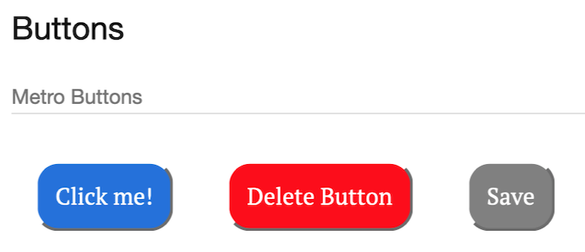

Building a Component Library
While finishing my last semester of college I have been working at my internship with Metropolitan College. On my first day we talked about the main project that I would be completing for them: a component library.
The first thing I had to do was really read up on component libraries. This included reading the documentation for two popular component libraries: Pattern Lab and Fractal. After I felt confident in my knowledge, I began creating a set of prototype components to use in both libraries.  Once I had the sample components coded I ran both libraries and got a feel for the UI. I then worked on writing matching configuration files for things like the handlebars in both programs and the notes section. After using both libraries I presented my findings to Metropolitan College: